Trip Report: Shasta Lassen
I skied Mount Shasta (Avalanche Gulch) and Mount Lassen (Devastated Area) last weekend. Here are some pictures from the trip:
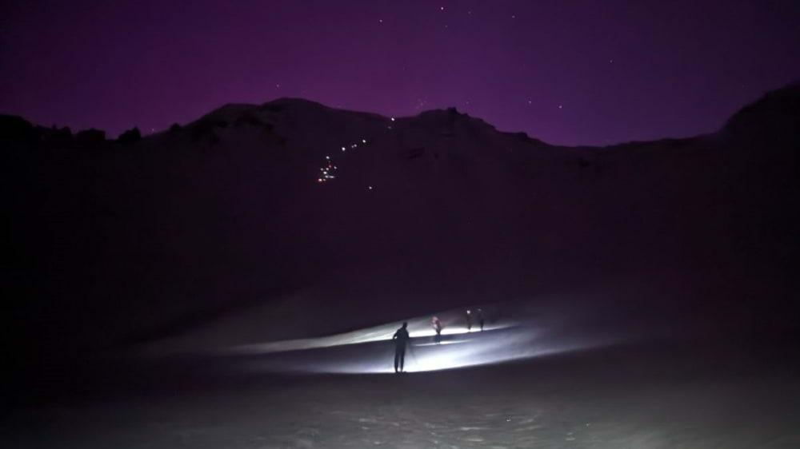
Saturday 3AM: Distant headlamps light the highway up Shasta
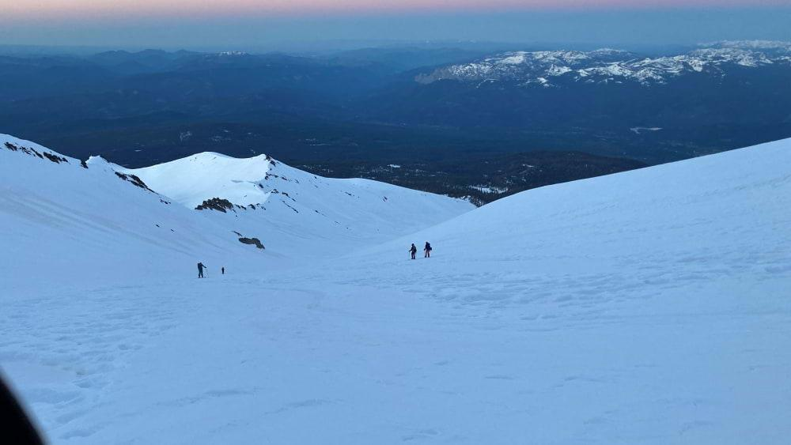
Saturday 6AM: Looking back down at snowshoers descending during pre-dawn light
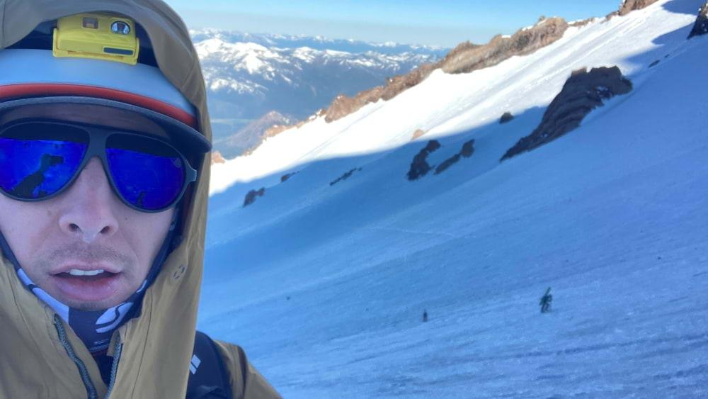
Saturday 7AM: Bootpacking selfie in the gulch
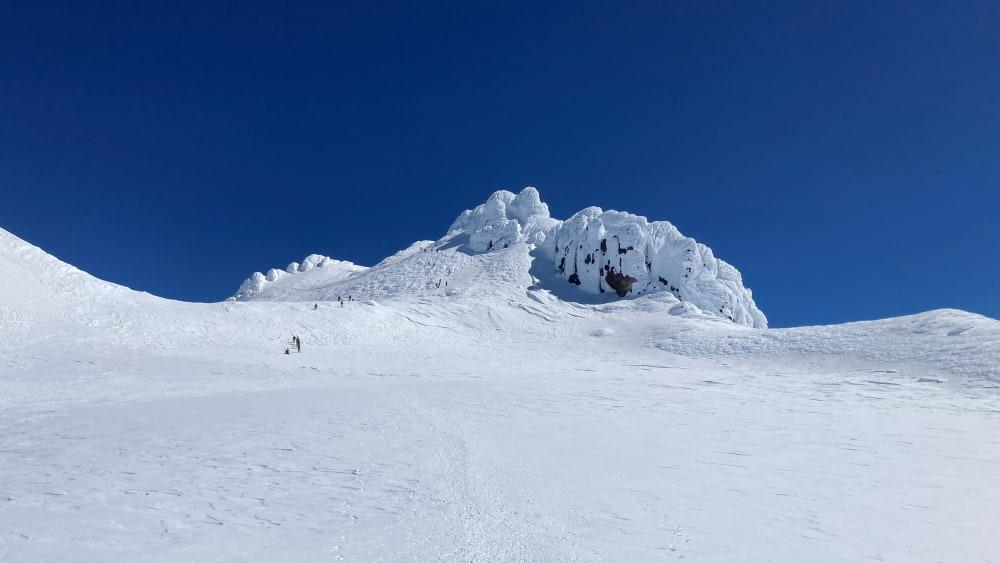
Saturday 10AM: The summit block in view
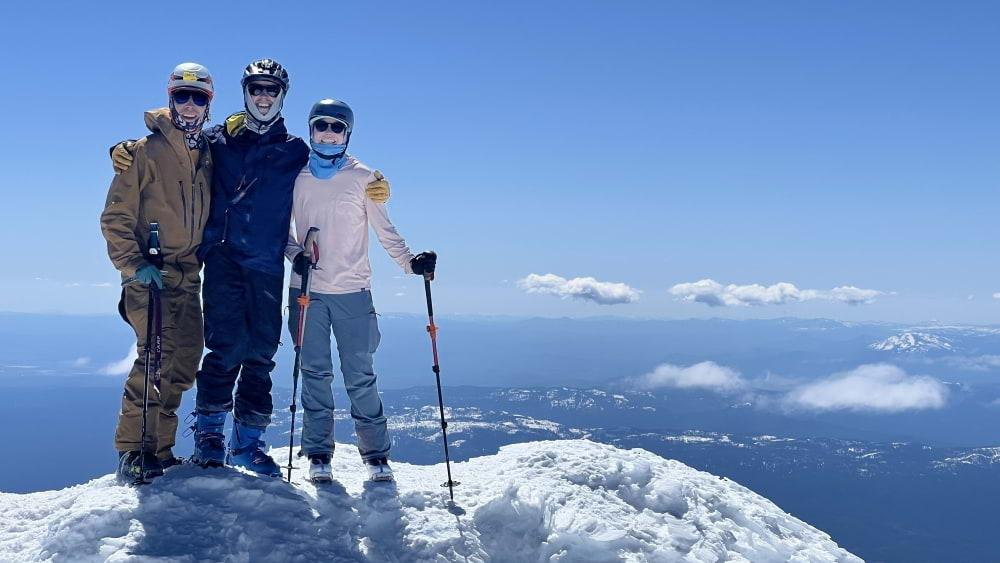
Saturday 10:30AM: Michelle, Chris, and I at the summit of Mt Shasta (from right to left)
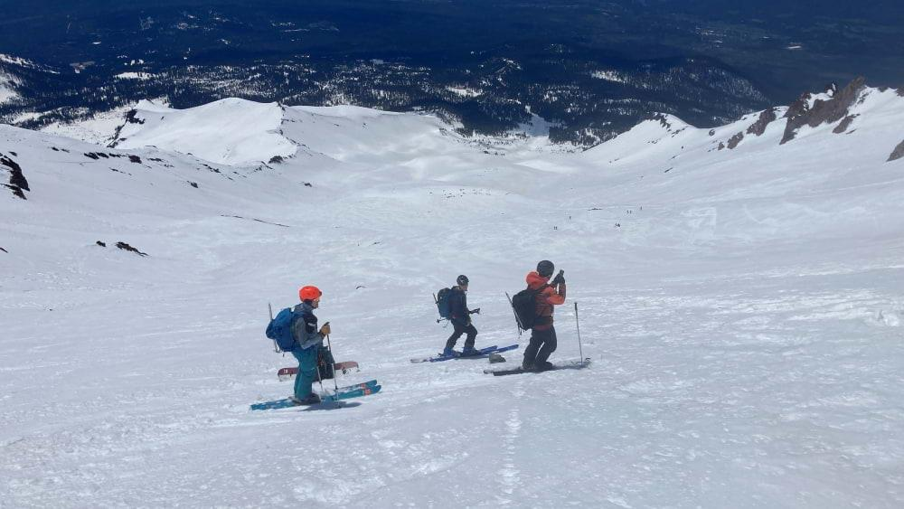
Saturday 12PM: Quick break to let our quads rest during the ski down
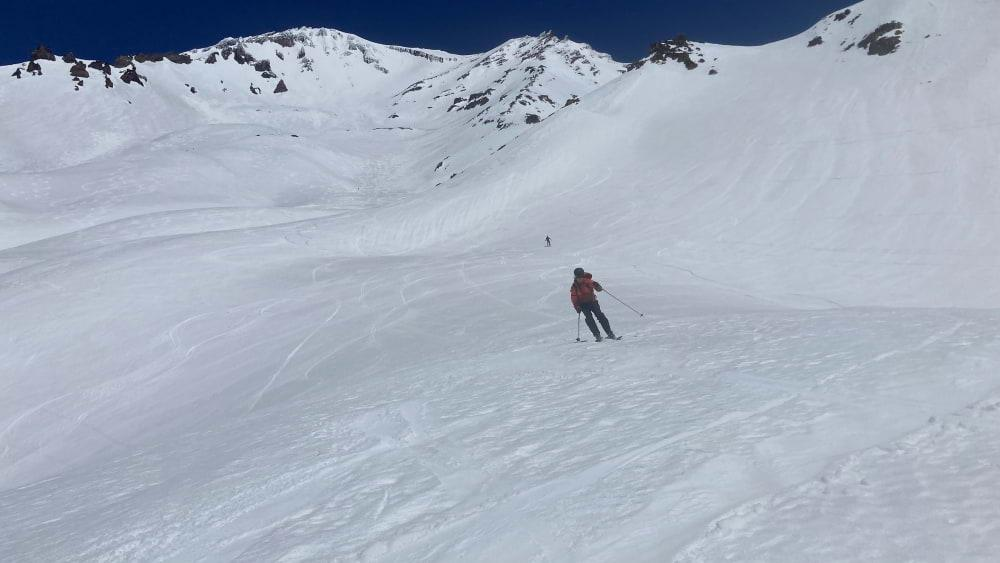
Saturday 12PM: My buddy Cole ripping some mashed potatoes
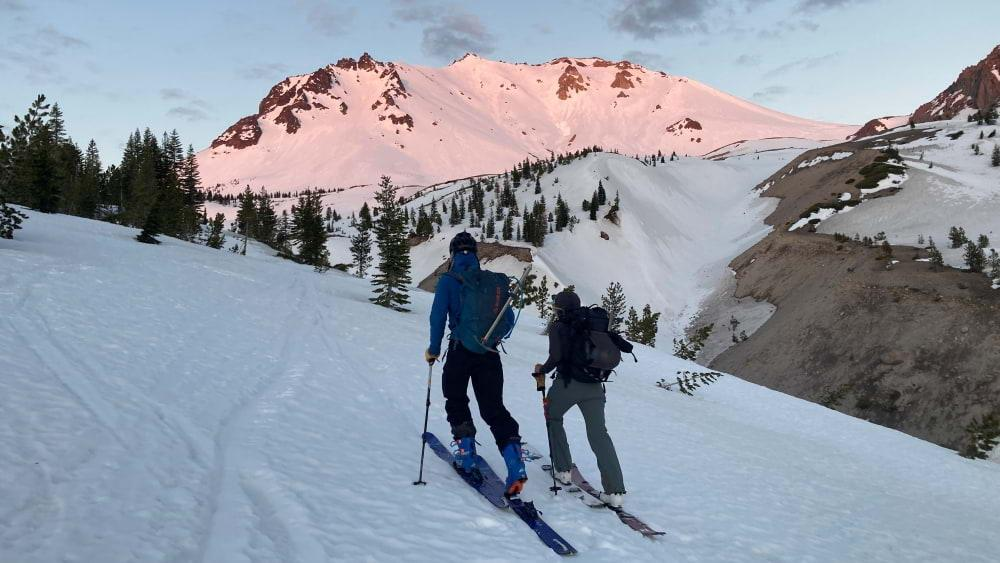
Sunday 5AM: Chris and Michelle skinning across the Devastated Area
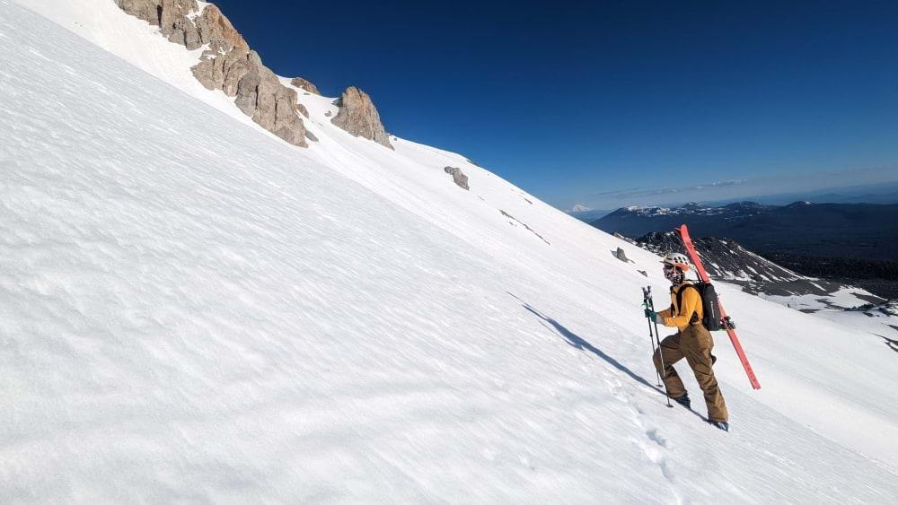
Sunday 7AM: Love a good bootpack. Mt Shasta is visible in the distance just above the ridge
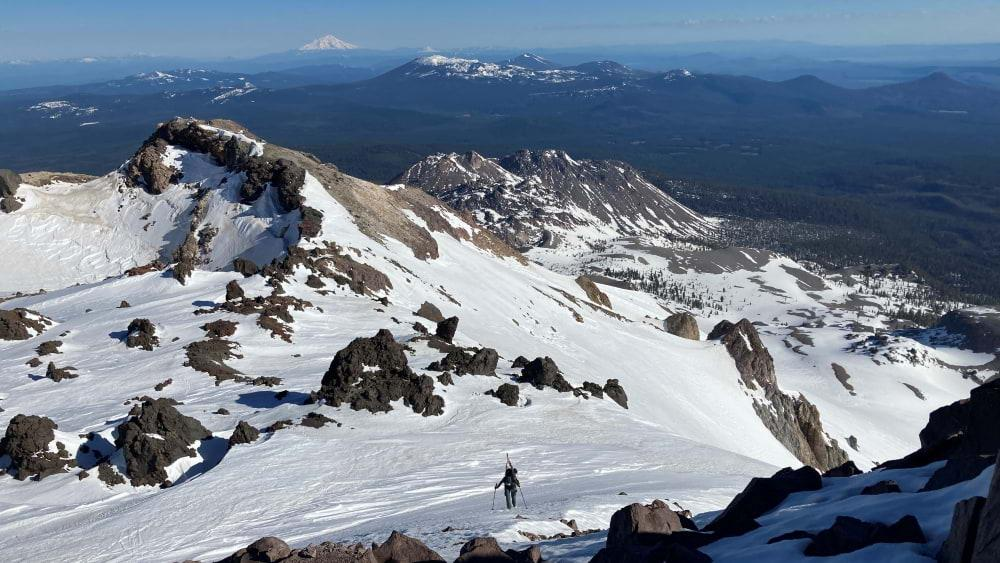
Sunday 9AM: Michelle climbing the final 100 ft of Mt Lassen
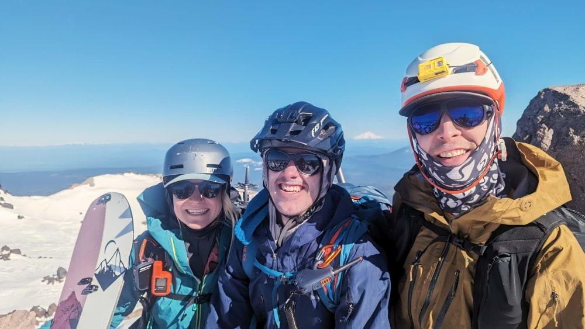
Sunday 10AM: Michelle, Chris, and I at the summit of Mt Lassen (this time, left to right)
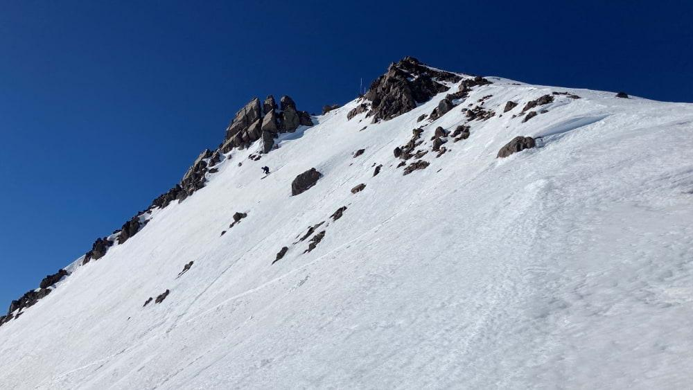
Sunday 10AM: Chris dropping off the summit
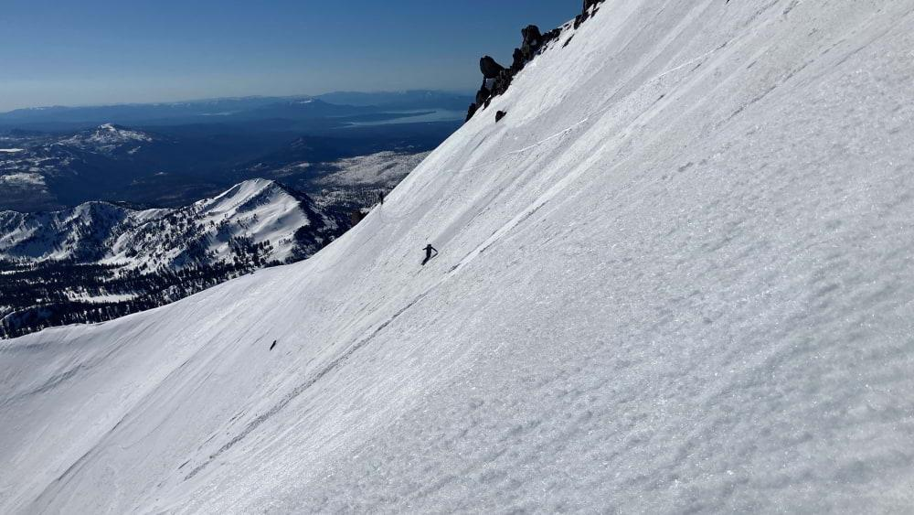
Sunday 10AM: Michelle ripping corn